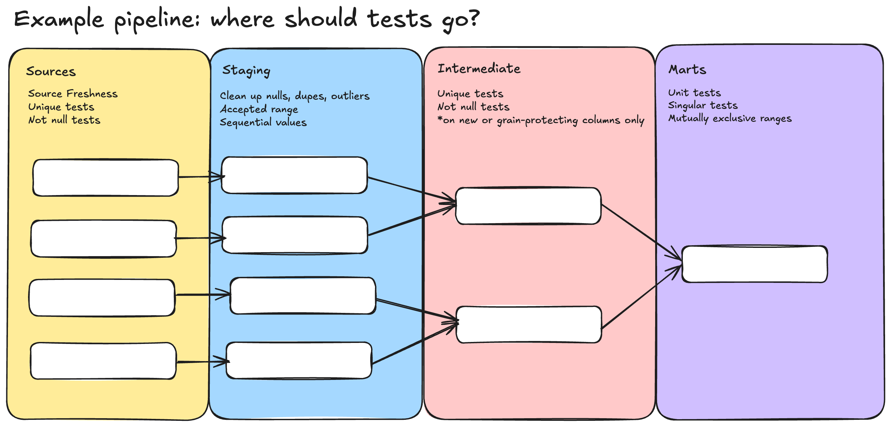

src_, stg_, int_, fct_, dim_A dbt project with no naming convention starts to rot fast. By the time you have 30 models, nobody can answer simple questions: Is customers a fact, a dimension, or a staging view? Does orders_final ship to BI or is it intermediate? Why are there both clean_orders and orders_clean?
The convention below is the dbt community’s de-facto standard. Follow it once and the answers come from the model name itself.
| Prefix | Layer | What it represents | Grain |
|---|---|---|---|
src_ |
Sources (in YAML) | A raw table outside dbt — Fivetran landing, application DB replica, scripts/ingest_raw.py | Whatever the source has |
stg_ |
Staging | One model per source table; light renames and casts only | 1:1 with the source |
int_ |
Intermediate | Stepping stones between staging and marts. Aggregations, multi-step calculations, reusable joins | Often new (regrouped) |
fct_ |
Facts (marts) | Events the business cares about — orders, sessions, transactions | One row per event |
dim_ |
Dimensions (marts) | Things the business cares about — customers, products, locations | One row per thing |
The prefix tells you three things at once: layer (where in the DAG), role (event vs thing vs work-in-progress), and expected grain (so you can spot when a join blew up). That’s a lot of information for three letters.

After Stage 2 you have:
models/
├── staging/
│ ├── _sources.yml ← src_ entries (jaffle_shop, stripe)
│ ├── stg__customers.sql
│ ├── stg__orders.sql
│ └── stg__payments.sql
├── intermediate/
│ └── int_order_payments.sql
└── marts/
├── dim_customers.sql
└── fct_orders.sql
Read top to bottom: two sources land three raw tables, three staging models clean them, one intermediate aggregates payments by order, then a fact and a dimension take the layered output the rest of the way to BI.
About the double underscore. This project uses
stg__customers(two underscores) butdim_customersandfct_orders(one). That’s a quirk of how this course was authored, not a community standard. dbt-labs’jaffle_shopreference project uses single underscores everywhere. When you read external dbt code you’ll seestg_customers— same idea, one underscore.
src.jaffle_shop.raw_customers ──► stg__customers ──┐
src.jaffle_shop.raw_orders ──► stg__orders ──┤
├──► fct_orders ──► (BI)
src.stripe.raw_payments ──► stg__payments ──► int_order_payments ──┘
stg__customers ──► dim_customers ──► (BI)
Every arrow is a source() or ref() call you’ve already written. The naming convention is what makes this readable on a whiteboard or in a dbt ls output.
int_ instead of just more stg_?A staging model is grain-preserving. The moment you group by something, the grain changed and the model isn’t staging anymore — it’s intermediate. Promoting it from stg_ to int_ is a flag to readers: “the row count here doesn’t match the source.”
A useful test: if you can’t write a unique test on the same primary key as the source table, you’re past staging.
fct_ and dim_ instead of just mart_?Some teams do use a flat mart_* prefix. Two reasons the split is worth keeping:
fct_orders join dim_customers is unambiguous: an event joining out to a thing. mart_orders join mart_customers reads like two peers, and senior analysts have to think harder about which side drives.fct_/dim_ early, the questions a fact should answer (per-event aggregates, per-period rollups) and the questions a dimension should answer (per-entity attributes) stay clearer as the project grows.| Layer | Allowed | Banned |
|---|---|---|
src_ |
Source declaration in YAML | SQL transformations |
stg_ |
Renames, casts, dropping unused columns | Joins, filters beyond obvious junk, business logic, aggregations |
int_ |
Aggregations, multi-step calculations, reusable joins, type-2 building blocks | Anything an analyst would query directly |
fct_ |
One-row-per-event tables, foreign keys to dimensions, additive measures | Wide unrelated joins, dimension attributes denormalized in (lightly OK, heavily not) |
dim_ |
One-row-per-thing tables, descriptive attributes, slowly-changing snapshots | Event measures, time-series counts |
final_orders / cleaned_orders / orders_v2. Names that describe their history rather than their layer. Future-you won’t remember which one is current.int_ and stg_ in the same folder. Folders should match prefixes — staging models in staging/, intermediates in intermediate/, facts and dims in marts/.int_ to dodge naming decisions. If a model is going to ship to BI, name it fct_ or dim_ from the start, even if the SQL is short.source('stripe', 'raw_payments') directly into a fact “saves a model” but pushes raw-shape concerns (cents, weird types, vendor column names) into business logic. Always go through a stg_ first.This is the last lesson in Stage 2. Press n for the stage quiz.